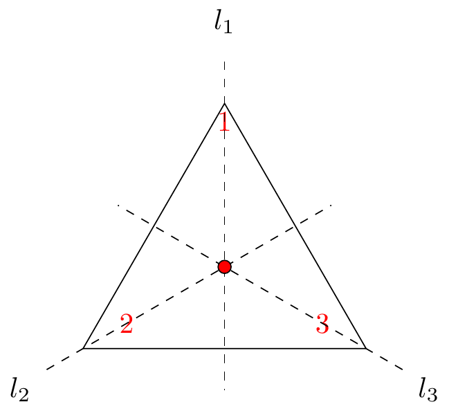
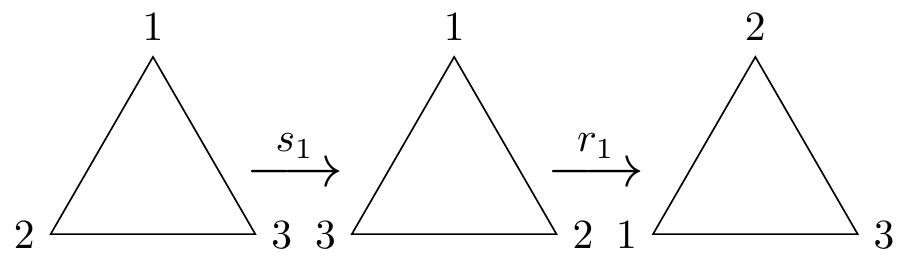
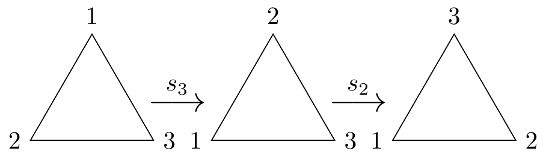
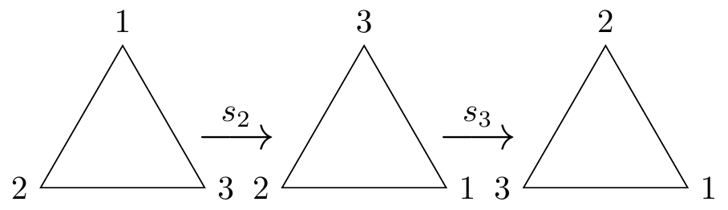
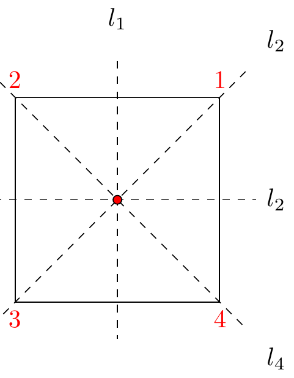
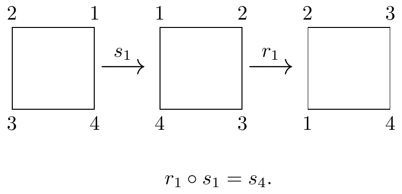
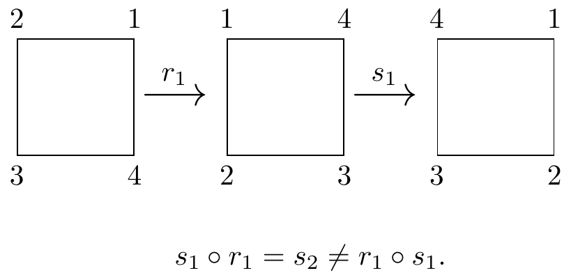
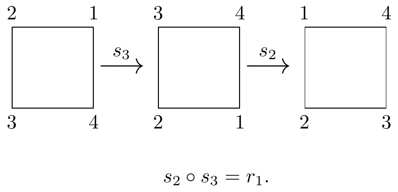
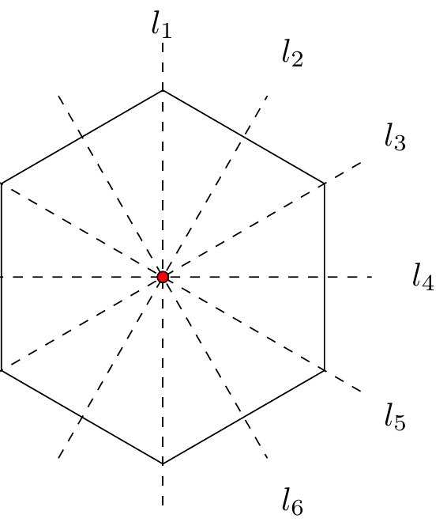

2 Symmetry, Congruences, Matrices, and Roots of Unity
2.1 Symmetry
Suppose we take a square in the plane. If we rotate that square through an angle of \(\pi / 2\) radians about its centre, then it looks exactly the same as it did before - in the absence of any labelling we cannot tell that the square has been rotated and we say that a square has rotational symmetry. We may well ask whether there are symmetries other than the aforementioned rotation that leave the square unchanged. In general we are interested in geometrical transformations that leave shapes ‘unchanged’.
We need to make the idea of a geometrical transformation more precise. The type of geometrical transformation that we have in mind can move a figure around, but must not change its size or shape, that is it must not alter distances or angles. In fact, a transformation which leaves distances unaltered must also leave angles unchanged, so all we need to build into our definition of a geometrical transformation is that it leaves distances unchanged. Such transformations are called symmetries.
Definition 2.1 (Symmetry) A symmetry of the plane is a bijective mapping \(f : \R^2 \rightarrow \R^2\) which preserves distances, that is \(\forall \; x, y \in \R^2\) the distance between \(f(x)\) and \(f(y)\) equals the distance between \(x\) and \(y\).
The symmetries of the plane include translations, rotations about a point, and reflections in a line. For our purposes we are not concerned with symmetries that move the location of the shape in space and, hence, our attention will be restricted only to rotations and reflections.
Example 2.1 The symmetries of an equilateral triangle

What are the symmetries of an equilateral triangle?
There are three possible lines of reflection and three rotations about the centre through \(2\pi/3\) radians. Conventionally rotations are measured in the anticlockwise direction.
Thus the symmetries are:
\(e = r_3\) – The identity map;
\(r_1\) – anticlockwise rotation by \(2 \pi/3\) radians;
\(r_2\) – anticlockwise rotation by \(4\pi/3\) radians;
\(s_1\) – reflection in the line \(l_1\);
\(s_2\) – reflection in the line \(l_2\);
\(s_3\) – reflection in the line \(l_3\).
The rotation \(r_3\) is a rotation of \(6\pi/3 = 2\pi\) radians is the ‘identity mapping’, in particular we can treat the rotations as working modulo \(3\).
Note that as symmetries are functions, we can combine symmetries in the same way as we compose functions. In particular, when combining of symmetries we do so from right to left. We work through some examples:
\(r_1 \circ s_1\):
This is equal to \(s_3\) as shown in Figure 2.2.

\(s_2 \circ s_3\):
This is equal to \(r_1\) as shown in Figure 2.3.

\(s_3 \circ s_2\):
This is equal to \(r_2\) (see Figure 2.4). Therefore, \[s_3 \circ s_2 \ne s_2 \circ s_3.\]

The lines of symmetry are fixed and do not move with the triangle!
We can draw up the following multiplication table for combining symmetries:
\[\begin{array}{c|cccccc} &e&r_1&r_2&s_1&s_2&s_3\\ \hline e&e&r_1&r_2&s_1&s_2&s_3\\ r_1&r_1&r_2&e&s_3&s_1&s_2\\ r_2&r_2&e&r_1&s_2&s_3&s_1\\ s_1&s_1&s_2&s_3&e&r_1&r_2\\ s_2&s_2&s_3&s_1&r_2&e&r_1\\ s_3&s_3&s_1&s_2&r_1&r_2&e \end{array}\]
Note than entries in the table are read left to right. In particular, to find the value of \(s_2 \circ s_3\) we look for the entry in row \(s_2\) and column \(s_3\) (which is \(r_1\)); likewise \(s_3 \circ s_2\) is the entry in row \(s_3\) and column \(s_2\) (this is \(r_2\)).
Example 2.2 Develop suitable notation and construct an operation table for the symmetries of a square.

The symmetries are:
\(r_n\) – anticlockwise rotation by \(2n\pi/4 = n\pi/2\) radians, \(n \in \{0,1,2,3\}\);
\(s_i\) – reflection in the line \(l_i\), \(i \in \{1,2,3,4\}\).
Observe that \(r_0 = e\). As in the case of the triangle we can treat anticlockwise rotations as working modulo 4. Indeed rotating \(4\) times anticlockwise by \(\pi/2\) is the same as \(r_0\).
Some example compositions follow:
\(r_1 \circ s_1\):

\(s_1 \circ r_1\):

\(s_2 \circ s_3\):

The operation table is:
\[\begin{array}{c|cccccccc} \circ&e&r_1&r_2&r_3&s_1&s_2&s_3&s_4\\ \hline e&e&r_1&r_2&r_3&s_1&s_2&s_3&s_4\\ r_1&r_1&r_2&r_3&e&s_4&s_1&s_2&s_3\\ r_2&r_2&r_3&e&r_1&s_3&s_4&s_1&s_2\\ r_3&r_3&e&r_1&r_2&s_2&s_3&s_4&s_1 \\ s_1&s_1&s_2&s_3&s_4&e&r_1&r_2&r_3 \\ s_2&s_2&s_3&s_4&s_1&r_3&e&r_1&r_2 \\ s_3&s_3&s_4&s_1&s_2&r_2&r_3&e&r_1 \\ s_4&s_4&s_1&s_2&s_3&r_1&r_2&r_3&e \end{array}\]
2.2 Congruences
Recall the definition from the first-year Algebra module. For integers \(a\) and \(b\) and some fixed positive integer \(m\), we say that \(a\) is congruent to \(b\) modulo \(m\) if and only if \(m\) divides \(a - b\). Symbolically we have \(a \equiv b \modu m) \ifif m \divides (a-b)\).
Let us consider the set of numbers \(\{0, 1, 2, \ldots, n-1 \}\) and, in particular, what happens if we add together those numbers pairwise, but working modulo \(n\). For any given value of \(n\) we are able to construct a table as follows.
Example 2.3 Let \(n=7\).
Write \(\oplus_{7}\) for the operation of addition modulo \(7\). For example \[\begin{eqnarray*} 2 \oplus_{7} 3 &=& 5 \\ 6 \oplus_{7} 4 &=& 3. \end{eqnarray*}\]
The operation table is as follows:
\[\begin{array}{c|ccccccc} \oplus_7&0&1&2&3&4&5&6\\ \hline 0&0&1&2&3&4&5&6\\ 1&1&2&3&4&5&6&0\\ 2&2&3&4&5&6&0&1\\ 3&3&4&5&6&0&1&2\\ 4&4&5&6&0&1&2&3\\ 5&5&6&0&1&2&3&4\\ 6&6&0&1&2&3&4&5\\ \end{array}\]
2.3 Matrices
Consider the following four \(2 \times 2\) matrices with real entries: \[\left( \begin{array}{cc} 1 & 0 \\ 0 & 1 \end{array} \right), \qquad \left( \begin{array}{cc} -1 & 0 \\ 0 & -1 \end{array} \right), \qquad \left( \begin{array}{cc} 0 & 1 \\ 1 & 0 \end{array} \right), \qquad \left( \begin{array}{cc} 0 & -1 \\ -1 & 0 \end{array} \right).\] We can multiply together these matrices pairwise (with the usual matrix multiplication) and construct the following table:
\[\begin{array}{c|cccc} \times&\begin{pmatrix} 1 & 0 \\ 0 & 1 \end{pmatrix}&\begin{pmatrix} -1 & 0 \\ 0 & -1 \end{pmatrix}&\begin{pmatrix} 0 & 1 \\ 1 & 0 \end{pmatrix}&\begin{pmatrix} 0 & -1 \\ -1 & 0 \end{pmatrix}\\ \hline \begin{pmatrix} 1 & 0 \\ 0 & 1 \end{pmatrix}&\begin{pmatrix} 1 & 0 \\ 0 & 1 \end{pmatrix}&\begin{pmatrix} -1 & 0 \\ 0 & -1 \end{pmatrix}&\begin{pmatrix} 0 & 1 \\ 1 & 0 \end{pmatrix}&\begin{pmatrix} 0 & -1 \\ -1 & 0\end{pmatrix}\\ \begin{pmatrix} -1 & 0 \\ 0 & -1 \end{pmatrix}&\begin{pmatrix} -1 & 0 \\ 0 & -1 \end{pmatrix}&\begin{pmatrix} 1 & 0 \\ 0 & 1 \end{pmatrix}&\begin{pmatrix} 0 & -1 \\ -1 & 0 \end{pmatrix}&\begin{pmatrix} 0 & 1 \\ 1 & 0\end{pmatrix}\\ \begin{pmatrix} 0 & 1 \\ 1 & 0 \end{pmatrix}&\begin{pmatrix} 0 & 1 \\ 1 & 0 \end{pmatrix}&\begin{pmatrix} 0 & -1 \\ -1 & 0 \end{pmatrix}&\begin{pmatrix} 1 & 0 \\ 0 & 1 \end{pmatrix}&\begin{pmatrix} -1 & 0 \\ 0 & -1\end{pmatrix}\\ \begin{pmatrix} 0 & -1 \\ -1 & 0 \end{pmatrix}&\begin{pmatrix} 0 & -1 \\ -1 & 0 \end{pmatrix}&\begin{pmatrix} 0 & 1 \\ 1 & 0 \end{pmatrix}&\begin{pmatrix} -1 & 0 \\ 0 & -1 \end{pmatrix}&\begin{pmatrix} 1 & 0 \\ 0 & 1\end{pmatrix}\\ \end{array}\]
2.4 Roots of Unity
In the first-year Algebra module we investigated, in the complex numbers section, the roots of unity. We found that the \(n^{th}\) roots of unity are the \(n\) distinct complex numbers of the form \(e^{i \frac{2 k \pi}{n}}\) where \(k=0, 1, 2, \ldots, n-1\). Consider the fifth roots of unity, that is the complex numbers of the form \(e^{i \frac{2 k \pi}{5}}\), where \(k=0, 1, 2, \ldots, 4\) and let us see what happens when we multiply these together pairwise and form a table of the results.
\[\begin{array}{c|ccccc} \times&1&\e^{\frac{2\pi i}{5}}&\e^{\frac{4\pi i}{5}}&\e^{\frac{6\pi i}{5}}&\e^{\frac{8\pi i}{5}}\\ \hline 1&1&\e^{\frac{2\pi i}{5}}&\e^{\frac{4\pi i}{5}}&\e^{\frac{6\pi i}{5}}&\e^{\frac{8\pi i}{5}}\\ \e^{\frac{2\pi i}{5}}&\e^{\frac{2\pi i}{5}}&\e^{\frac{4\pi i}{5}}&\e^{\frac{6\pi i}{5}}&\e^{\frac{8\pi i}{5}} & 1\\ \e^{\frac{4\pi i}{5}}&\e^{\frac{4\pi i}{5}}&\e^{\frac{6\pi i}{5}}&\e^{\frac{8\pi i}{5}} & 1 & \e^{\frac{2\pi i}{5}} \\ \e^{\frac{6\pi i}{5}}&\e^{\frac{6\pi i}{5}}&\e^{\frac{8\pi i}{5}} & 1 &\e^{\frac{2\pi i}{5}}&\e^{\frac{4\pi i}{5}}\\ \e^{\frac{8\pi i}{5}}&\e^{\frac{8\pi i}{5}}& 1&\e^{\frac{2\pi i}{5}}&\e^{\frac{4\pi i}{5}}&\e^{\frac{6\pi i}{5}}\\ \end{array}\]
Note that if \(k=5\), then \(\e^{\frac{2k\pi i}{5}} = \e^{2\pi i} = 1\).
The whole point of abstraction in Mathematics is to look at the properties of mathematical objects independently from their composition. We are interested in the general rules that govern the behaviour of particular types of object and, importantly, the generalised structure of such objects. With that in mind we now investigate the previous examples to see if there are any general properties that they all share.
In each case we started with a non-empty set of elements as follows:
- Symmetries of an equilateral triangle:
- \[\{e, r_1, r_2, s_1, s_2, s_3\}.\]
- Addition modulo 7:
- \[\{0,1,2,3,4,5,6\}.\]
- Matrices:
- \[\left\{\left( \begin{array}{cc} 1 & 0 \\ 0 & 1 \end{array} \right), \left( \begin{array}{cc} -1 & 0 \\ 0 & -1 \end{array} \right), \left( \begin{array}{cc} 0 & 1 \\ 1 & 0 \end{array} \right), \left( \begin{array}{cc} 0 & -1 \\ -1 & 0 \end{array} \right)\right\}.\]
- Fifth roots of unity:
- \[\left\{1,\e^{\frac{2\pi i}{5}},\e^{\frac{4\pi i}{5}},\e^{\frac{6\pi i}{5}},\e^{\frac{8\pi i}{5}}\right\}.\]
In each case we had an operation that we used to combine elements from the set and, more importantly gave a unique answer in each case:
- Symmetries of an Equilateral triangle:
- Composition of functions, for example \[r_1 \circ s_1 = s_3.\]
- Congruences:
- For a positive integer \(m\), addition modulo \(m\) (\(\oplus_m\)). For example for \(m=7\), \[5 \oplus_{7} 6 = 4.\]
- Matrices:
- Matrix multiplication. For example, \[\left( \begin{array}{cc} 0 & 1 \\ 1 & 0 \end{array} \right)\left( \begin{array}{cc} -1 & 0 \\ 0 & -1 \end{array} \right)=\left( \begin{array}{cc} 0 & -1 \\ -1 & 0 \end{array} \right)\]
- Roots of unity:
- Multiplication, for example \[\e^{\frac{2\pi i}{5}}\e^{\frac{4\pi i}{5}}=\e^{\frac{6\pi i}{5}}.\]
Such operations are called binary operations and are defined as follows:
Definition 2.2 (Binary Operation) A binary operation on a set, \(S\), is an operation, \(*\), such that \(x*y\) is uniquely defined \(\forall x, y \in S\).
So, in each case we have a set of objects and a binary operation that combines elements from the set. We now turn our attention to the structure of the tables that we have constructed.
The entries in the body of the table only comprise elements of the set we are working with; the binary operation, when applied to elements of the set, never produced something not in the set. In such circumstances we say the the set is closed under the binary operation. Formally we have that a set \(S\) is closed under \(*\) if and only if \(\forall \, x, y \in S, \; x*y \in S\).
Example 2.4
- Symmetries of the square: we can see from the table that composing any pair of symmetries gives another symmetry. For example \(r_1 \circ s_4 = s_3\).
- Congruence: For a positive integer \(m\), adding two numbers modulo \(m\) results in a number in the set \(\{0,1,2,\ldots, m-1\}\). For example, for \(m=7\), \(3 \oplus_7 6 = 2\).
We can see that in each table there is one row and one column, associated with just one of the group elements, that repeats the index row and column. This tells us that each of the sets contains an identity element, that is an element that when combined under the binary operation with another element leaves that other element unchanged.
We often use the symbol \(e\) to represent a generic identity element and we say that the set has an identity with respect to a particular binary operation. Formally we have that \(e \in S\) is an identity element of \(S\) with respect to \(*\) if and only if \(\forall \, x \in S, \, e*x=x\) and \(x*e= x\). It is important to note that the identity elements in the above examples are all ‘two-sided’.
Example 2.5
- Symmetries of the triangle:
-
Here \(e\) is the identity element. We can check that, \(e \circ x = x \circ e = e\) for any symmetry \(e\) of the triangle. For example \[e \circ s_2 = s_2 \circ e = s_2.\]
- Congruences:
-
Here, \(0\) is the identity element. For example, working mod \(7\), we can check that, \(0 \oplus_7 x = x \oplus_7 0 = x\) for any \(x \in \{0,1,2,3,4,5,6,7\}\). For example \[0 \oplus_{7} 5 = 5 \oplus_{7} 0 = 5.\]
- Matrices:
- The identity matrix is the identity: \[\begin{pmatrix} 1 & 0 \\ 0 & 1 \end{pmatrix}.\]
An important property of identity elements is given in the following lemma.
Lemma 2.1 If \(S\) is a set closed under a binary operation, \(*\), then \(S\) contains at most one identity.
Let \(e\) and \(f\) be identity elements of \(S\). Then \(e = e \ast f = f\) and so \(e = f\).
- We note that in each table the identity element appears precisely once in each row and each column. This tells us that each element of the set has a corresponding element such that when the two are combined the result is the identity. We refer to the second element as an inverse of the first.
Example 2.6
Covered in lectures. Check back once the chapter is concluded.
An important property of inverses of elements is given in the following lemma.
Lemma 2.2 Let \(S\) be a set closed under an associative binary operation, \(*\), with identity, \(e\). Then \(x \in S\) has, at most, one inverse.
Covered in lectures. Check back once the chapter is concluded.
We denote the inverse of an element \(x\) as \(x^{-1}\). In the same way that the identity is ‘two-sided’ we can see from the tables that the combining of each element with its inverse is two-sided and this leads to the following formal definition. Let \(S\) be a set, closed under a binary operation, \(*\), with identity \(e\). The inverse of \(x \in S\) is any element \(x^{-1} \in S\) such that \(x*x^{-1} = x^{-1}*x = e\).
- One final property that all of our examples share, but which is not obvious from the tables, is that in each case the binary operation is associative. Formally we have that \(*\) is associative on \(S\) if and only if \(\forall \, x, y, z \in S, \, (x*y)*z = x*(y*z)\). Note that it is the binary operation that is associative, not the set of objects.
Example 2.7
Covered in lectures. Check back once the chapter is concluded.
A set of elements, together with a binary operation that satisfies each of the conditions that we have explored above, forms an algebraic structure called a group. We shall start to deal with groups in a formal manner in the next chapter, but in the meantime we state and prove an important Lemma and explore further the properties of binary operations.
Lemma 2.3 Let \(S\) be a set closed under an associative binary operation, \(*\), with identity, \(e\). If \(x^{-1}\) and \(y^{-1}\) exist, then \((x*y)^{-1} = y^{-1} * x^{-1}\).
Covered in lectures. Check back once the chapter is concluded.
Properties of Binary Operations
The above lemma extends easily to inverses of repeated ‘products’, e.g. \[(a*b*c*d)^{-1} = d^{-1}*c^{-1}*b^{-1}*a^{-1}.\]
Let \(S\) be a set closed under an associative binary operation, \(*\). Then all ways of bracketing an expression, \(x_1*x_2* \ldots x_n\), give the same answer.
Let \(S\) be a set closed under an associative binary operation, \(*\). Then \(x^n = \underbrace{x*x* \ldots *x}_{\text{$n$ terms}}\), where \(n\) is a positive integer. It follows, from the generalised associative law, that for positive integer powers of a single element, the usual index laws are valid: \[\begin{eqnarray*} x^a * x^b &=& x^{a+b}\\ (x^a)^b &=& x^{ab}. \end{eqnarray*}\]
If \(S\) is a set closed under an associative binary operation, \(*\), with an identity element, \(e\), then we define \(x^0 = e, \;\forall x \in S\).
Since zero is not positive it now follows that the index laws are valid for all natural number powers of a single element, where \(0 \in \N\).
If \(x\) has an inverse, then we define \[x^{-n} = (x^n)^{-1} = (x^{-1})^n,\] where \(n\) is a positive integer. Note that \((x^n)^{-1} = (x^{-1})^n\) by repeated application of Lemma 2.3. This now ensures that the index laws are valid for all integer powers of an element which has an inverse.
Example 2.8 A binary operation \(*\) is defined on \(\R\) by \(x*y=x+y-xy\).
- Show that \(\R\) closed under \(*\).
- Prove that \(*\) associative on \(\R\).
- Find the identity element w.r.t. \(*\) and show that it satisfies the required conditions to be an identity.
- Does every element of \(\R\) have an inverse under \(*\)?
Covered in lectures. Check back once the chapter is concluded.
2.5 Problem Sheet 2
For Week 4; covers Chapter 2 material.
Develop suitable notation and construct an operation table for the symmetries of a regular hexagon, as shown below. For consistency with examples in the lecture notes, let the vertical line of symmetry be denoted \(l_1\) and number the others in a clockwise direction.

Lemma 2.3 states that if \(S\) is a set closed under an associative binary operation, \(*\), with identity, \(e\), and if \(x^{-1}\) and \(y^{-1}\) exist, then \((x*y)^{-1} = y^{-1} * x^{-1}\). Use mathematical induction to prove that this lemma extends to any finite product, that is \[(x_1 * x_2 * \ldots * x_{n-1} * x_n)^{-1} = x_n^{-1} * x_{n-1}^{-1} * \ldots * x_2^{-1} * x_1^{-1}\] for all natural numbers, \(n\).
A binary operation \(*\) is defined on \(\R\) by \(x*y=xy-2x-2y+6\).
- Is \(\R\) closed under \(*\)?
- Is \(*\) associative on \(\R\)?
- Does \(\R\) have an identity element w.r.t. \(*\)?
- Does every element of \(\R\) have an inverse under \(*\)?
A binary operation \(*\) is defined on \(\R\backslash\{2\}\) by \(x*y=xy-2x-2y+6\).
- Is \(\R\backslash\{2\}\) closed under \(*\)?
- Is \(*\) associative on \(\R\backslash\{2\}\)?
- Does \(\R\backslash\{2\}\) have an identity element w.r.t. \(*\)?
- Does every element of \(\R\backslash\{2\}\) have an inverse under \(*\)?